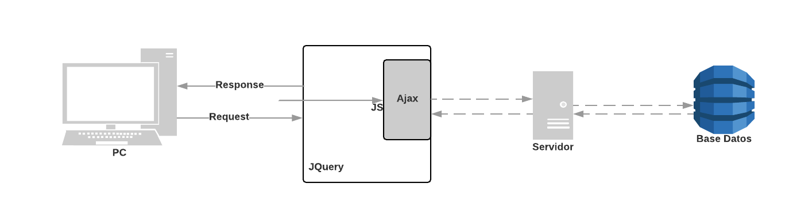

Cuestionario
- ¿Qué alternativas a jQuery existen?
- Zepto.js Zepto es una librería de JavaScript para navegadores modernos with a largely jQuery-compatible API.
- Umbrella JS.
- ReactJS
- AngularJS
Busca los atributos que hay en la base de datos
Mostrar los productos y descripcion
Mostrar los productos de maíz blanco
Bibliografía
https://www.acunetix.com/websitesecurity/sql-injection/
http://searchoracle.techtarget.com/definition/Open-Database-Connectivity